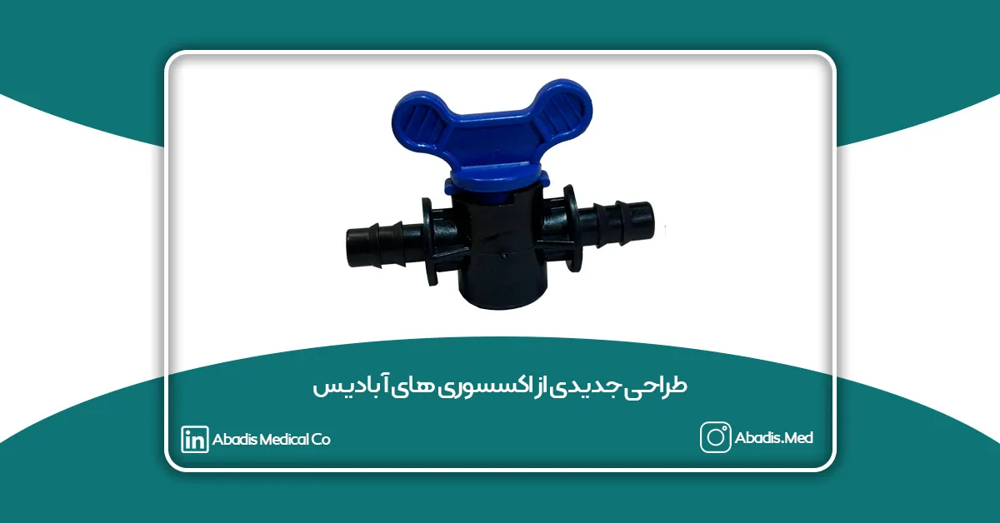
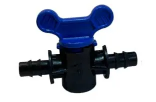
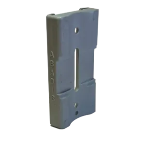
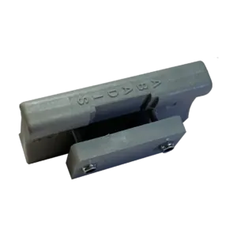
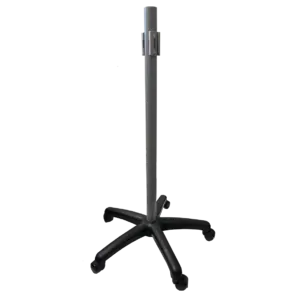

شرکت مخازن طبی آبادیس در راستای کاربری آسانتر استفاده از محصولات خود در حوزه کنترل عفونت بیمارستانی طراحی جدیدی را از 4 محصول شیر ON/OFF، گیره مخزن دیواری، گیره مخزن پرتابل و پایه ساکشن پرتابل انجام داده است.
شیر ON/OFF قطعهای برای قطع و وصل کردن جریان وکیوم به مخزن ساکشن میباشد.
برای کسب اطلاعات بیشتر درباره این محصول به این صفحه مراجعه نمایید.

شیر ON/OFF
گیره مخزن دیواری برای نگه داشتن مخزن ساکشن بر روی دیوار و کنسول مورد استفاده قرار میگیرد.
برای کسب اطلاعات بیشتر درباره این محصول به این صفحه مراجعه نمایید.

گیره مخزن دیواری
گیره مخزن پرتابل نگهدارنده مخزن ساکشن بر روی دستگاههای پرتابل و برقی است.
برای کسب اطلاعات بیشتر درباره این محصول به این صفحه مراجعه نمایید.

گیره مخزن پرتابل
پایه ساکشن پرتابل به عنوان هلدر نگهدارنده مخزن ساکشن استفاده میشود، و به سیستم وکیوم سانترال بیمارستان متصل میگردد.
برای کسب اطلاعات بیشتر درباره این محصول به این صفحه مراجعه نمایید.

پایه ساکشن پرتابل